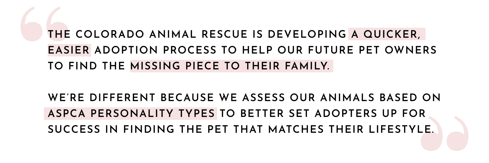
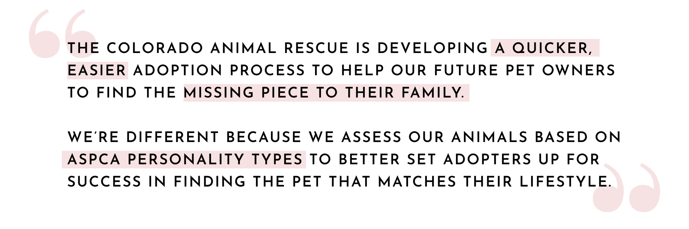

The Colorado Animal Rescue (abbreviated C.A.R.E) is a non-profit organization located in the Colorado Rocky Mountain city of Glenwood Springs. Since it’s conception in 1992, the Colorado Animal Rescue has found homes for over 20,000 abandoned, stray, and surrendured animals under the core values of Socially Conscious Sheltering.
This redesign presents an approach help the Colorado Animal Rescue meet the rising demand of animals in need by augmenting the adoption process to better retain users and ensure that quality adoptions are made to maintain animals in homes rather than in shelters.
To better understand our users, our stakeholders, and our competitors, I collaborated with two other UX designers to gather research. To learn more about the landscape of colorado animal adoption shelters. We conducted a Competitor analysis to better understand how CARE compares to other shelters in the Rocky Mountain Region.
My competitive analysis revealed to me that the small size of the Colorado Animal Resue may serve as a competitive advantage. Due to its smaller size, C.A.R.E employees are able to spend more quality time with their animals. Because of this, CARE is able to give more time to get to know their animals. One of the ways they do this is through using the ASPCA Pet Personality Assessment on all their dogs and cats to identify what type of home they would best belong in.
In order to learn about the real experiences pet adopters have had while beginning an adoption process online, My colleagues and I worked together to create a research plan to guide our intentions in our upcoming user interviews. We determined that the goal for the research was to answer the following questions:
From our anticipated outcomes, we drafted a proto-persona about the attributes of our expected target user. The goal of creating the proto-persona was to frame our mindset around the type of user we expect to enounter in our user interviews.
We conducted 5 semi-structured user interviews that focused on open ended questions about user’s past experiences with adoption shelters. All participants were pre-screened to fit the criteria of being a current or prospective owner of a shelter animal. To identify emerging themes from these user interviews, we synthesized the user interview insights into an affinity diagram.
Creating an affinity diagram allowed us to extract common themes amongst our users and their experiences with adoption shelters. From the data, I was able to gather the following insights about our users wants and needs:
To gather additional user input, I designed a survey that consisted of multiple choice and short answer, open ended questions. the goal of the survey was to further validate the direction of the design by gaining more insights into the type of solutions that our users would value most. All survey participants were pre-screened to have experience as a shelter pet owner or prospective adopter. Here are the highlights:
From the survey results, I learned that for potential adopters post-covid, 80% of our users were making decisions about where to adopt from based on information provided online. This ultimately means that the website is the first point of contact in the adoption process where we have a responsibility to lay a positive foundation to encourage users to continue with their adoption at C.A.R.E. Also, based on data gathered from both the survey and the interviews, we learned that the number 1 pain point experienced by users was a lack of information on adoption pages to guide the user through the adoption process. However, the second leading painpoint was an overwhelming amount of information during adoption that confuses and overloads the user. This overall demonstrates a need to balance the information architecture to help our users better filter what content pertains to them.
I wanted to ensure that our data and results from the user interviews and surveys were strategically utilized to create a human centered product. To do so, I synthesized the interview and survey insights into a user persona that represented the interests of our users -- meet Amanda James:

Before imagining the design solution, we wanted to first understand the problem thoroughly from a multifaceted perspective. We started by gathering data about the usability of the current Colorado Animal Rescue Site to uncover areas where we may be losing users along the adoption process currently.
My colleagues assisted me in conducting 5 usability tests in which we instructed users to navigate the site as a potential adopter. These tests were conducted remotely using zoom with an open ended, think-aloud format. From these tests we were able to organize key insights into an affinity diagram and a priority matrix to illuminate areas of improvement to focus the designs.
Too many features of the site were being advertised in the content above the fold, and therefore users did not feel guided towards any particular call to action. The placement of the adoption application pathway seemed to be inappropriately placed out of clear view, contradictory to its importance.
Users didn't connect the term "adoption survey" to be related to the application process. Misinterpreting this feature caused users to skip over the Adoption Survey and feel frustrated looking for the application.
The top navigation items are represented as buttons, so users did not expect a dropdown to occur with a hover interaction. Also, the dropdown drawer was not attached to the button and instead was hovering several pixels below in the hero header. These two interactions combined caused users to not even notice a dropdown menu had opened.
Alongside usability testing, I performed a heuristic evaluation by redlining the pages along the adoption pathway. The goal was to compare the current user interface to industry best practices to illuminate areas of growth.
With an understanding of our user’s needs and potential usability issues on the current Colorado Animal Rescue website, I wanted to turn my focus towards concretely defining the problems we hope to address for pet adopters like Amanda. I started by brainstorming user insight statements to see the problem through the lens of our users.
As I began to frame my thinking around my design solution, I reflected back on all the data and insights I had gathered thus far and asked myself how I could represent them best. After reviewing my key takeaways from each step of my process, I worked to define over-arching characteristics that I wanted my design to entail. From there, I brainstormed ways which those characteristics could be executed in my design.
Through my research, the Colorado Animal Rescue was the only shelter in the area that was already using the ASPCA guide to pet personalities to assess their animals, largely due to their small size allowing them more quality time per animal. I felt as though utilizing this strength by restructuring the online adoption process to center around a pet personality quiz would be a unique way to create sustainable adoption pairs while also gamifying the adoption process and removing some of the overwhelm of adopting by introducing the user's to their best lifestyle matches right away.
Alongside this, I established plans to better communicate the adoption process, step-by-step, from start to finish. This includes rebranding the adoption process using terms and language that users can better understand and disclosing important information such as the appointment only policy up front. Lastly, I made plans to augment the website's current information architecture to define a clear hierarchy that intuitively guides the user to a call to action.
Once determining the direction of my designs, I defined the Colorado Animal Rescue's competitive edge through the creation of a value proposition canvas, and Value Proposition Statement:
 

Maintaining a consistent throughline of empathy is important to always keep the product grounded by user needs. Thus, I collaborated with my team members again to develop a storyboard and UX scenario to imagine how my proposed solution might play out for a user like Amanda. The goal was to see our solution through the lens of our users and empathize with the the thoughts, feelings and emotions they may be experiencing along the way.

From our storyboarding exercise, I collaborated with one of my colleagues in defining a user flow to better understand how our target user would be interacting with every page along their journey to adopt a pet. the main goal was to identify what screens we would need to create and the actions that our users would need each screen to perform.

To aid in the goal of restructuring the information architecture of the site, we performed a card sorting exercise to group like content together and identify confusing or ambiguous language. We then carefully adjusted the language of specific sections that our users struggled to understand to find tags and labels that conveyed more meaning to users.
We referenced results from the card sorting activity to create a sitemap that reflected our new comprehensive structure for the Colorado Animal Rescue webpage.
As I moved into the prototyping phase, I started with some low fidelity sketches created using Mockup. the goal of the sketches was to apply a content structure before adding any visual design. The homepage was organized to prioritize animal adoption and pet personality quiz participation.
These initial sketches were translated in to low-fidelity digital wireframes designed across to breakpoints for responsivity to mobile. In future iterations, a third breakpoint will be explored for tablet.
In order to create a functional quiz that could produce results that align with real ASPCA Pet Personality Archetypes, I needed to conduct extensive research on the components of pet personalities so that I could design questions that strategically match a person's lifestyle to the ASPCA archetype that is a good match. For the purposes of the prototype, I focused solely on the Dog personaliy guide. The ASPCA defines their "Canine-alities" by measuring two key attributes of a dog's personality: Persistence and Motivation. Each permutation of these characteristic variations produce one of the nine total dog personalities.
Persistence refers to the level of mental or physical activity a dog needs to have in order to feel satisfied and is measured from mild, to moderate, to high persistence.
Motivation refers to what sorts of rewards a dog values most. The three types of motivation styles are internal, external, and social motivation.
Understanding these two metrics allowed me to strategically design quiz questions that could compare each characteristic to particular lifestyle choices of the user. Each question assessed either motivation or persistence independently, with multiple choice answers that would determine which of the three variations of the trait each user would best align with. Below are some sample questions.
To test the effectiveness of our content structure with our users, my two colleagues and I collaborated to conduct 5 remote, moderated, Think Aloud user tests on the low-fidelity models over Zoom.
The results from the low fidelity user tests were arranged into an affinity map to illuminate common themes and painpoints. Our results showed that further work was needed on our end to clarify language, particularly surrounding quiz questions so that the user would understand that the quiz applies to dogs or cats only depending on the version of the quiz they chose to take.
After making iterations on the prototype based on the feedback and insights from the user testing, I began work on a style guide to begin shaping the new brand identity for the Colorado Animal Rescue.
Shades of purple are used to frame the content with a connotation to loyalty, compassion, and as an homage to the "purple mountain majesty" of the Colorado Rockies that Colorado Animal Rescue calls home. Shades of orange are used to connote playfulness and excitement, though used intentionally so to avoid negative connotations of the color such as loudness and overwhelm.
Shadows into Light is a fun display font that communicates a down to earth and welcoming feel, though used sparingly due to potential challenges with readability if used in large bodies of text. Livvic is used to make headers fun and quirky, yet highly readable. Roboto is used as main body font to promote cleanliness and readability.
Simple, yet clearly defined button interactions.
Used for visual support to textual content. Rounded corner iconography is used to promote a relaxed and informal feel.
Imagery focuses on showcasing the warm comfort of the human-animal bond as well as animal-centered photography. tasteful touches of the Colorado Rocky Mountains keep the design rooted in Colorado Animal Rescue's identity.
During the construction of the final high-fidelity prototype, rapid A/B tests were performed to inform the visual application of the style guide to the prototype. Iterations were made accordingly to reflect user preferences. Once the prototype was completed, I conducted one final round of usability testing to eliminate any outstanding pain points.